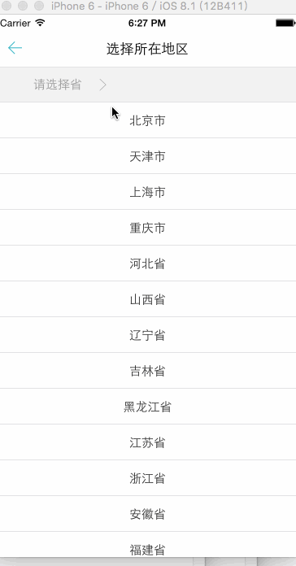

一幅图片：
一副动画图像： 
请注意，插入动画图像的语法与插入普通图像的语法没有区别。
来自 W3School.com.cn 的图像：


图像 在文本中
在文本中
图像在文本中
图像在文本中
图像在文本中
请注意，bottom对齐默认方式为bottom
带有图像的一个段落。图像的 align 属性设置为 "left"。图像将浮动到文本的左侧。
 带有图像的一个段落。图像的 align 属性设置为 "right"。图像将浮动到文本的右侧。
带有图像的一个段落。图像的 align 属性设置为 "right"。图像将浮动到文本的右侧。

通过改变 img 标签的 "height" 和 "width" 属性的值，您可以放大或缩小图像。
请点击图像上的星球，把它们放大。
注释：元素中的 "usemap" 属性引用 map 元素中的 "id" 或 "name" 属性（根据浏览器），所以我们同时向 map 元素添加了 "id" 和 "name" 属性。
请把鼠标移动到图像上，看一下状态栏的坐标如何变化。